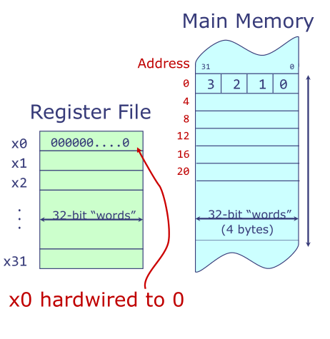
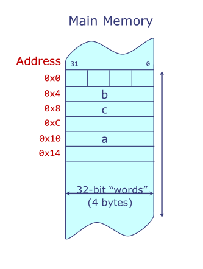

RISC-V汇编详解之基本指令
前言：之前读CSAPP学了X86汇编，最近又学了RISC-V汇编。X86汇编、RISC-V汇编恰好分别是CISC和RISC的典型代表。因此打算写几篇博客介绍一下RISC-V汇编和X86汇编，然后将二者的特性做一个横向对比。
这篇文章主要介绍RISC-V汇编的基本指令，主要参考来源为MIT6.004课程1，以及自己的一些笔记。
RISC-V ISA
1.ISA可以理解为是一种软件和硬件之间的约定。
- 规定了运算和存储的位置
- 是对软件如何访问硬件的精确描述
2.RISC-V ISA概述
- 一种全新的、开源免费的ISA，源于加州伯克利
- 有几种变种：
- RV32,RV64,RV128三种不同字长
- I：整数指令
- M：乘法和除法指令
- F和D：单精度、双精度浮点数指令
- 以及许多其他模块化扩展
以下我们以32位字长为例
RISC-V处理器存储结构
- 寄存器
- 32个通用寄存器
- 每个寄存器都是32位宽
- 存储器
- 一个字为32位
- 存储器是字节可寻址的（1字节=8位）
- 相邻字的地址相差4字节
- 地址长度为32位
- 可寻址地址范围是2^32字节

RISC-V介绍
- 三种类型的运算
- 计算指令（computational）：在寄存器上执行算术和逻辑运算
- 控制流指令（control flow）：改变指令执行的顺序，以支持条件表达式和循环
- 装入/存储指令（loads and stores）：在寄存器和主存之间传送数据
1.计算指令
算术、比较、逻辑、移位运算
R-R指令（Register-Register）：
2个源操作数寄存器
1个目的寄存器
- 格式：oper dest ，src1，src2
- oper：操作
- dest：目的寄存器
- src1：源寄存器1
- src2：源寄存器2
- 格式：oper dest ，src1，src2
算术 比较 逻辑 移位 add，sub slt，sltu and，or，xor sll，srl，sra slt set less than sltu set less than unsigned sll shift left logical srl shift right logical sra shift right arithmetice.g.
- add x3, x1 , x2
- x1+x2 —> x3
- slt x3, x1 , x2
- 等价于x3 =( x1<x2? 1 : 0)
R-I指令（Register-Immediate）
源操作数分别来自寄存器中的数值和一个小的常数（这个常数）- 格式：oper dest，src1，const
- addi x3，x1 ，3
- x1 + 3 —> x3
- addi x3，x1 ，3
算术 比较 逻辑 移位 addi， subslti，sltiu andi，ori，xori slli，sril，srai ps:没有subi指令，减法可通过加负数实现 - 格式：oper dest，src1，const
复杂的组合运算
- 将复杂的表达式拆解成基本的R-R和R-I指令
2.控制流指令
条件跳转指令
- 格式：comp src1，src2，label
- 首先进行：src1 comp src2
- 如果结果为1，即表达式真，跳转到label标记的指令处执行；否则，继续顺序执行下一条指令
指令 beq bne blt bge bltu bgeu comp == != < >= < >= if(a<b): c = a + 1
else : c = b + 2bge x1 , x2 , else
addi x3, x1 , 1
beq x0 , x0 , end
else: addi x3, x2, 2
end:- 格式：comp src1，src2，label
注解：以上分别为python条件语句与生成的对应的汇编代码。 我们假设寄存器x1存储a，x2存储b，x3存储c。汇编代码第三行beq，在x1 < x2情形下，总是会执行，因为 x0 == x0总成立，此行的作用是跳过else分支，直接跳转到end处。
无条件跳转指令
jal：无条件跳转和链接
- 如：jal x3，label
- 跳转到label标记处
- label编码为目标与当前指令的偏移量
- 链接：将pc值，即下一条指令的地址，存入x3寄存器
- 如：jal x3，label
jalr：通过寄存器无条件跳转并链接
- 如：jalr x3，4(x1)
- 计算x1+4作为跳转目标
- 能跳转到任何地址（32位），支持长跳转
- 如：jalr x3，4(x1)
常数和指令编码限制
- 指令被编码为32位
- 需要确定操作：10位
- 需要确定2个源寄存器（10位）或者一个源寄存器（5位）附加一个小的常数
- 需要确定1个目的寄存器（5位）
ps：确定寄存器需要5位，因为共有32个通用寄存器，log2（32）=5
- R-I指令中的常数需要少于12位：32 - 10 - 5 - 5 = 12。更长的常数需要存在寄存器或是内存中。
- jal指令的常数是20位宽（7位用于确定操作，5位用于确定寄存器）
- 指令被编码为32位
3.装入/加载指令
a = b + c
load(0x4) -> x1
load(0x8) -> x2
x1 + x2 -> x3
x3 -> store(0x10)
地址格式:<基址，偏移量>
基址通常存在寄存器中
偏移量为常数
指令格式：
lw dest，offset（base）
sw src，offset（base）a = b + c
lw x1, 0x4(x0)
lw x2, 0x8(x0)
add x3, x1, x2
sw x3, 0x10(x0)
4.伪指令
指令的别名
| 伪指令 | 等效的汇编指令 |
|---|---|
| mv rd,rs | addi rd, rs ,0 |
| li rd,imm | addi rd, x0,imm |
| ble x1,x2,label | bge x2,x1,label |
| beqz x1,label | beq x1,x0,label |
| bnez x1,label | bne x1,x0,label |
| j label | jal x0，label |
| lui rd , imm |
- lui指令
- 格式：lui rd,immU
- lui意为 load upper immediate
- imm = {immU,12’b0}
- Reg[rd] <= imm
- 如：lui x2，2 将0x2000存入x2
小结
- 计算类指令：
R-R: op dest, src1,src2
R-I:op dest, src1,const- 控制流指令：
- 无条件跳转：
jal r ，label
jalr r0 ，offset（r1）- 条件跳转：
comp src1，src2，label
- 条件跳转：
- 无条件跳转：
- 控制流指令：
- 装入/加载指令：
lw dest，offset（base）
sw src，offset（base） - 伪指令：
其他指令的缩写/别名
如有错误，望批评指正!
转载请注明来源，谢谢